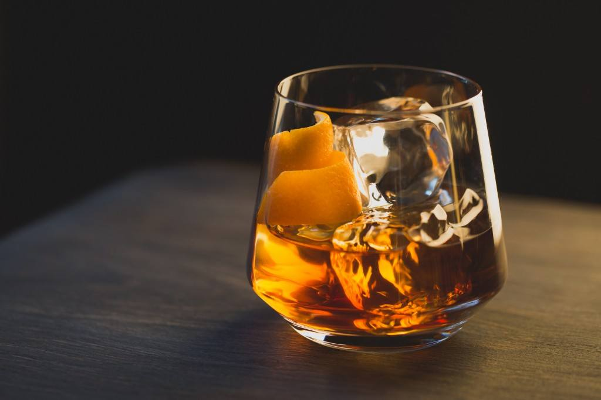

Strength
INGREDIENTS:
2 oz
1⁄4 oz Simple syrup
2 dashes Angostura bitters
GARNISH:
Orange peel
GLASS:
Old Fashioned
HOW TO MAKE:
Add all ingredients into a mixing glass with ice and stir.
Strain into an Old Fashioned glass over fresh ice.
Express the oil of an orange peel over glass and garnish with the peel.
"The first mention in print of "old fashioned cocktails" was in the Chicago Daily Tribune in February 1880.[7] However, the Pendennis Club, a gentlemen's club founded in 1881 in Louisville, Kentucky, claims the old fashioned cocktail was invented there. The recipe was said to have been invented by a bartender at that club in honor of Colonel James E. Pepper, a prominent bourbon distiller, who brought it to the Waldorf-Astoria Hotel bar in New York City.[8]"